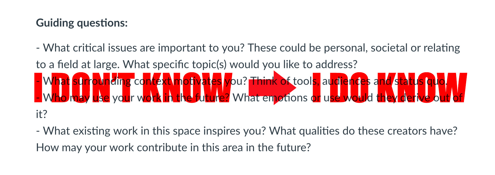
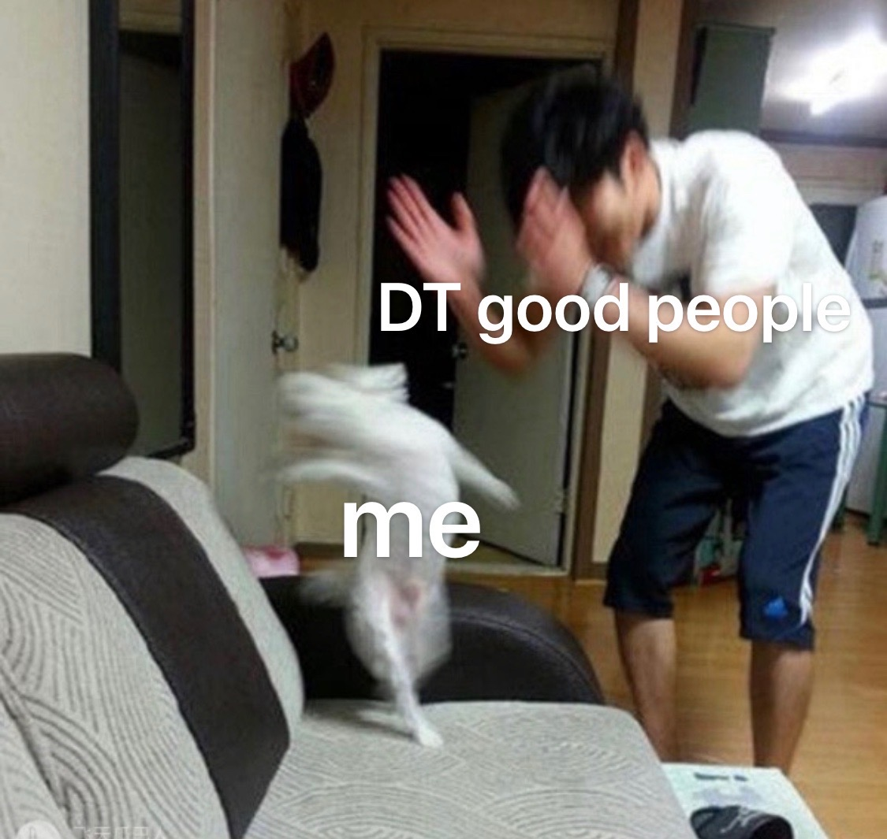

Due Date: Oct,22 2020
Since I was quite young, I immersed myself in various medias such as science fiction TV series, video games, and even some cult films, I was fascinated by the unexpected images and the world of fantasy, and immediately felt a strong will to become an innovative creator in the future. Many artists and designers have inspired me, their works have made me understand how to present ideas in unique ways. The works of still and motion images, such as Hideo Kojima's game Metal Gear Solid and Matthew Barney's Cremaster Cycle series, although these two works are completely different types, they are both perfect combinations of artistry and media language, which helped me recognize the multimodal nature of artistic expression; it was also in which did I sense the critical humor and realize that art, images, and games can be developed into a harmonized combination. Especially under the influence of Hideo Kojima, I developed a great interest in the game industry.
With the intuition of my interests and the investigations of my undergraduate study in Central Academy of Fine Arts, I absorbed the latest VR techniques and 2D and 3D Animation, Interactive Image Creation, Image and Speculation, Dynamic Graphics and also installation art. I learned to recognize that the constantly generated art media along with traditional aesthetic creations interweave with each other, forming an invisible grid - interactive media. I am already on my way to fully understand each intersection point.
Under current environment, I think Virtual Reality is a very promising art form, so I started VR-related media art creating in past two years, which is also a project I will continue to work on in Parsons. The Design & Technology MFA emphasis that the discipline uses developing technology as a medium of artistic expression. It simultaneously reflects upon, challenges and innovates the form of creation. This pursuit coincides with my own identity, and stimulates my pursuit of how industrial exploration collides with thinking. I think my main purpose in DT is to explore different art forms, and then integrate the artistic way of thinking into the game industry, which I have always interested in. I noticed that although the game industry is developing rapidly in China, there is still a lack of sincere games, players nowadays are constantly investing money in junk games. Most games made by big companies like Tencent and NetEase are mostly to meet business needs, but are inevitably rigid and lacking artistry. I see developing potentials in both the art and game industries in China and think that the domestic market and profession of media art are facing a growing era, during which talents will be massively needed. In the long run, I hope my accumulation of media art will contribute to my artistic visions and drive the development of the Chinese game industry where commercial games may someday no longer dominate the market.
Due Date: Oct,22 2020
I went back to check the request of our first ms1 assignment, which is in the picture down below. When I wrote my personal statement 1.0 I was quite confused and literally didn't know how to answer these questions. The process of major studio is a process from being confused about art creation to finding a suitable own way of myself. After the course, looking back at these questions, I think I have the answers.

Most of my ideas come from the surrounding context, and as I said in my previous statement, I always regard myself as a person driven by my interest, many of my works are based on sudden discoveries of objects in my daily life. I think that society is just like a theater, in which immersive dramas are constantly being staged. As an audience, I walk through different repertoires and enjoy the these wonderful narratives of our society.
In MS1, I started to join this immersive social drama, different from my usual working style of staying in the studio with my computer, I made a breakthrough during this course, I physically stepped out and participated in the background of my work. My 7in7 and final project forced me to do a lot of space exploration, in this way I perceived the world from a more physically involved perspective and such experience also made my work concept more solid.
When I looked back at my webpage, I found that I had roughly confirmed the theme of the final project at 7in7 day5. After that, I have been constantly thinking about it, including several long processes such as concept further research, storyboard and the physical & digital representation. Although I don't like the feeling of being pushed forward, I find that such process is very effective for creation. My presentation of my final project is basically the same as the presentation I envisaged in the first place, yet after iterations, the depth of work and the expressiveness of my concept have been greatly improved.
In addition, I feel that while major studio taught me how to generate a complete art piece step by step, it also gave me a better understanding of my own creative process and the future possibilities of my works.
When chatting with Professor Fan, she mentioned that some of my concepts are about "covering". The ridiculous masks I made in 7in7 and the green screen used in my final project are all presenting the topic of “covering". Perhaps this topic can been continuously iterated in my other courses, try to use “cover” as a medium to express what is "covered".
Creating art project is just like dancing, the fast-paced Major Studio is like a crazy tap dance. Thanks to DT good people for always encouraging me to try things I have never done before. I did learn a lot from professor Sareen, professor Fan and of course my dear classmates, the critics and online exercises are really useful.

MS1 has ended smoothly, I’m already looking forward to the next "dance":)